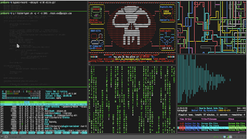
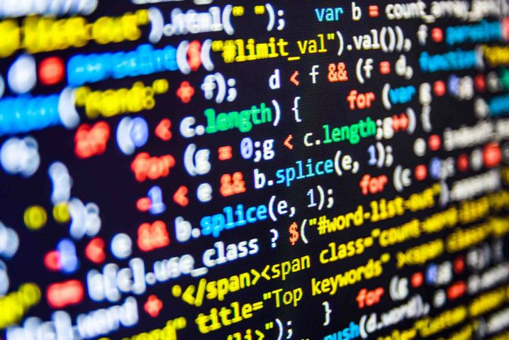

programador desde cero
si una persona es perseverante aunque sea dura de entendimiento, se hará inteligente;
y aunque sea débil se transformara en fuerte "Leonardo da Vinci"
watchdogs

El juego principal consiste en segmentos de conducción, disparos y sigilo, con elementos ocasionales de juegos de rol y rompecabezas. Los juegos de Watch Dogs se desarrollan en versiones ficticias de ciudades de la vida real, en varios momentos, y siguen a diferentes hackers .protagonistas que, aunque tienen diferentes objetivos que alcanzar, se ven envueltos en los bajos fondos criminales de sus respectivas ciudades. Los antagonistas suelen ser empresas corruptas, jefes del crimen y piratas informáticos rivales que se aprovechan de ctOS (Sistema Operativo central) , una red informática ficticia que conecta todos los dispositivos electrónicos de una ciudad en un solo sistema y almacena información personal. sobre la mayoría de los ciudadanos. El jugador también tiene acceso a ctOS, que se puede usar para controlar varios dispositivos para ayudarlos en el combate o resolver acertijos
hacker

Persona con grandes conocimientos de informática que se dedica a detectar fallos de seguridad en sistemas informáticos.
"algunos hackers son capaces de introducirse en los sistemas informáticos más sofisticados"
watchdogs1

Watch Dogs (estilizado como WATCH_DOGS) es una franquicia de videojuegos de acción y aventura publicada por Ubisoft y desarrollada principalmente por sus estudios de Montreal y Toronto utilizando el motor de juego Disrupt. El primer título homónimo de la serie se lanzó en 2014 y ha presentado tres juegos en total, el más reciente es Watch Dogs: Legion de 2020. También se han publicado varios libros relacionados y una miniserie de cómics ambientada en el universo de los juegos.
seguridad
1.
Ausencia de peligro o riesgo.
"ley de seguridad vial"
2.
Sensación de total confianza que se tiene en algo o alguien.
"es bueno tener seguridad en sí mismo"
JavaScript

JavaScript es un lenguaje de programación interpretado, dialecto del estándar ECMAScript. Se define como orientado a objetos, basado en prototipos, imperativo, débilmente tipado y dinámico.
informatica

La informática, también llamada computación, es el área de la ciencia que se encarga de estudiar la administración de métodos, técnicas y procesos con el fin de almacenar, procesar y transmitir información y datos en formato digital. La informática abarca desde disciplinas teóricas hasta disciplinas prácticas.